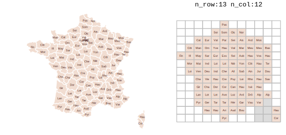

General
Misc
- Also see Surveys, Census Data >> Mapping
- Packages
- Resources
- Geocomputation with * (R, Python, Julia)
- Spatial sampling with R
- Spatial Statistics for Data Science: Theory and Practice with R
- Geodata & Spatial Regression
- rspatialdata: A collection of data sources and tutorials on visualizing spatial data using R
- Spatial Modelling for Data Scientists
- Geospatial Analysis with Python and R
- QGIS - free and open source
- ArcGIS - expensive and industry-standard
- Spatiotemporal Data — data cubes with spatial and regular temporal dimensions — such as
- e.g. gridded temperature values (raster time series) and vector data with temporal records at regular temporal instances (e.g. election results in states).
- {stars} - regular intervals
- {sftime} - irregular intervals
- e.g. gridded temperature values (raster time series) and vector data with temporal records at regular temporal instances (e.g. election results in states).
- Spatial Resampling
Creates cross-validation folds by k-means clustering coordinate variables
library(tidymodels) library(spatialsample) set.seed(123) spatial_splits <- spatial_clustering_cv(landslides, coords = c("x", "y"), v = 5) # fit a logistic model glm_spec <- logistic_reg() lsl_form <- lslpts ~ slope + cplan + cprof + elev + log10_carea lsl_wf <- workflow(lsl_form, glm_spec) doParallel::registerDoParallel() regular_rs <- fit_resamples(lsl_wf, bad_folds)
Terms
- Census Block Groups - ~600–3,000 population; the smallest geography reported; Wiki
- Census Tract - ~4,000 average population; Docs
- Also see Survey, Census Data >> Geographies
- Conflation - Combining and integrating multiple data sources that describe the same real-world features. (i.e. geospatial joins)
- Copying Out - Refers to the methodological practice of assigning the same value from a higher geographic unit (like a town or municipality) to all the smaller sub-units contained within it (like census tracts).
- This practice can induce (spurious) spatial autocorrelation. If so, then explanatory variables informative enough to explain the similarities between neighbors should be included or models taking into account the spatial autocorrelation should be fit. It can also lead to heteroskedacity.
- Graticules - a network of lines on a map that delineate the geographic coordinates (degrees of latitude and longitude.)
- Use of graticules is not advised, unless the graphical output will be used for measurement or navigation, or the direction of North is important for the interpretation of the content, or the content is intended to display distortions and artifacts created by projection. Unnecessary use of graticules only adds visual clutter but little relevant information. Use of coastlines, administrative boundaries or place names permits most viewers of the output to orient themselves better than a graticule
- {sf::st_graticule}
- Raster Data - Grid data (instead of point/polygon data in Vector Data) where each square on this grid is a small cell, and each cell holds a single value representing some real-world phenomenon, e.g. elevation, temperature, land cover type, rainfall amount, or color of a pixel in a satellite image. The entire collection of these cells and their values is what we call raster data. Raster data is better for continuous phenomena like elevation, soil moisture, or temperature. Most data from satellites and aerial photography comes in raster form.
- Spatial Joins - Join operations that match rows based on the (geo-)spatial relationship between column(s).
- In practice they are often used to answer questions like “which of these points are within which of these polygons?”.
- Spatial Predicate - A function that evaluates some spatial relation between two geometries and returns true or false (e.g.
st_intersection) - Vector Data - Data that uses points, lines, and polygons (instead of grid cells like Raster Data) to represent features like roads, buildings, or country borders. Vector data is precise and good for discrete objects.
- VRT - File format that allows a virtual GDAL dataset to be composed from other GDAL datasets with repositioning, and algorithms potentially applied as well as various kinds of metadata altered or added. VRT descriptions of datasets can be saved in an XML format normally given the extension .vrt.
- Basically a metadata XML file describing various properties of the actual raster file, like pixel dimensions, geolocation, etc..
Optimization
Resources
Cloud-Optimized Geospatial Formats Guide
- Includes sections on GeoTIFFs, Zarr, GeoParquet, FlatGeobuf, Kerchunk, NetCDF, Cloud Optimized Point Clouds (COPC)
- R Code using {stars}, {terra} and Python code
Cloud Optimized GeoTiff (COG)
- A regular GeoTIFF file, aimed at being hosted on a HTTP file server, with an internal organization that enables more efficient workflows on the cloud. It does this by leveraging the ability of clients issuing ​HTTP GET range requests to ask for just the parts of a file they need.
Vector Tiles
- Misc
- Notes from Push the limits of interactive mapping in R with vector tiles
- McBain goes through a complete example with plenty of tips on simplification strategies and hosting mbtiles files
- Resources
- OpenFreeMap
Current Styles (included 3-D): positron, bright, liberty
Using with {mapgl}
maplibre(style = "tiles.openfreemap.org/styles/liberty")
- Protomaps for PMTiles
- OpenFreeMap
- Issues (solution: Vector Tiles)
- Limited number of features with DOM canvas
- There’s a limit to how many features leaflet maps can handle, because at some point the DOM gets too full and your browser stops being able to parse it.
- Limited number of maps on same webpage
- Once you start rendering spatial data on WebGL canvasses instead of the DOM you’ll find there is a low number of WebGL contexts that can co-exist on any one web page, typically limiting you to only around 8 maps.
- File sizes blow up to hundreds of MB
- Trying to reuse WebGL maps by toggling on and off different layers of data for the user at opportune times. This is an improvement, but data for all those layers piles up, and your toolchain wants to embed this in your page as reams of base64 encoded text. Page file sizes are completely blowing out.
- Limited number of features with DOM canvas
- Notes from Push the limits of interactive mapping in R with vector tiles
- Use Cases
- Simplification of geometry is not desirable, e.g. because of alignment issues
- e.g. The zoomed-in road network has to align with the road network on the basemap, so that viewers can see features that lie along sections of road.
- Simplification of geometry doesn’t really help, you still have too many features
- Cumulatively your datasets are too large to handle.
- Simplification of geometry is not desirable, e.g. because of alignment issues
- Vector Tiles - Contain arrays of annotated spatial coordinate data which is combined with a separately transmitted stylesheet to produce the tile image.
- i.e. The edges of the roads, the boundaries of buildings etc. Not an image, but the building blocks for one
- Different stylesheets can use the same vector data to produce radically different looking maps that either highlight or omit data with certain attributes
- Mapbox Vector Tiles (MVT) - specification; the de-facto standard for vector tile files
- stored as a Google protocol buffer - a tightly packed binary format.
- PMTiles - Open source and {mapgl} supports it natively for both MapLibre and Mapbox maps. Use tippecanoe to convert your data to tiles in just the way you want.
- MBTiles - Proprietory format by Mapbox; describe a method of storing an entire MVT tileset inside a single file.
- Internally .mbtiles files are SQLlite databases containing two tables: metadata and tiles.
- Tiles table
- Indexed by z,x,y
- Contains a tile_data column for the vector tile protocol buffers, which are compressed using gzip
- Tiles table
- SQLite format and gzip compression help with efficient retrieval and transmission
- Internally .mbtiles files are SQLlite databases containing two tables: metadata and tiles.
- Using vector tiles we can have unlimited reference layers. Each one contributes nothing to the report file size since it is only streamed on demand when required.
- Workflow to convert data to .tbtiles
In R, read source data as an sf, and wrangle
- Tippecanoe expects epsg 4326 by default
Write data out to geojson
On the command line, convert geojson to .pmtiles/.mbtiles using the tippecanoe command line utility.
- Tippecanoe sources
- Alternatively it can output a folder structure full of protocol buffer files.
Example
tippecanoe -zg \ -o abs_mesh_blocks.mbtiles \ --coalesce-densest-as-needed \ --extend-zooms-if-still-dropping \ mb_shapes.geojson
- Mapping
Example
library(mvtview) library(rdeck) # Fire up the server serve_mvt("abs_mesh_blocks.mbtiles", port = 8765) # Serving your tile data from http://0.0.0.0:8765/abs_mesh_blocks.json. # Run clean_mvt() to remove all server sessions. mesh_blocks <- jsonlite::fromJSON("http://0.0.0.0:8765/abs_mesh_blocks.json") # Map the data rdeck( initial_bounds = structure(meshblocks$bounds, crs = 4326, class = "bbox") # set map limits using the tilejson ) |> add_mvt_layer( data = rdeck::tile_json("http://0.0.0.0:8765/abs_mesh_blocks.json"), get_fill_color = scale_color_linear( random_attribute ), opacity = 0.6 )See McBain article for options on hosting .mbtiles files
Regarding “abs_mesh_blocks”: {mvtview} provides a way to fetch the metadata table from .mbtiles as json by querying a json file with the same name as the .mbitles file.
The structure of ‘tilejson’ is yet another specification created by Mapbox, and is supported in deck.gl (and therefore {rdeck}) to describe tile endpoints.
- Misc
Grid Systems
Misc
- Packages
- {chopin} - Creates regular and padded grids
- {dggridR} - Builds discrete global grids which partition the surface of the Earth into hexagonal, triangular, or diamond cells, all of which have the same size. Vignettes available.
- {gridmaker} - Creates GISCO compatible and INSPIRE-compliant grids with IDs
- The resulting grid will not carry all the attributes of a GISCO grid downloaded from Eurostat, such as NUTS codes, population count, distance to the coast, country land border, etc., but it will have identical geometry and IDs.
- Faster than
sf::st_make_grid(), as it is uses {sfheaders} internally
- {gridmapper} - Creates grid where each polygon is a cell.
 - {zonebuilder} (Video)- Breaks up large geographic regions such as cities into manageable zones
- Most cities have a centre, the ‘heart’ of the city. Therefore, the zones are distributed around the center.
- Typically, the population is much denser in and around the centre and also the traffic intensity is higher. Therefore, the zones are smaller in and around the centre.
- The rings (so A, B, C, D, etc) reflect the proximity to the centre point. The distances from the outer borders of the rings A, B, C, D, etc. follow the triangular number sequence 1, 3, 6, 10, etc.
- This means that in everyday life use, within zone A everything is in walking distance, from ring B to the centre requires a bike, from zone C and further to the center typically requires public transport.
- Regarding direction relative to the centre, the clock analogy is used, since most people are familiar with that. So each ring (annuli) is divided into 12 segments, where segment 12 is directed at 12:00, segment 1 at 1:00 etc.
- Advantages
- Uniform area.
- Data is normalized by area.
- Consistent and unchanging.
- Enables change detection and time series analyses.
- Easily integrated with other gridded data.
- Support for disaster response.
- May better represent zero or null values.
- Facilitates small area analysis and estimation.
- Easily define areas of interest and maintain consistency.
- Stable work units for census operations and sampling.
- Facilitates artificial intelligence and machine learning (AI/ML) options.
- Creates an alternative to (but does not replace) current geographies.
- Uniform area.
- Global Population Grids (March 2024)
{kind=link}
{kind=link}
{kind=link}
{kind=link}
Concepts
Explainer: Why using hexbins to visualize Australian electoral map is better than a typical provincial map.
tl;dr: Geographical size distorts what the value is trying to measure. The value is the party that wins the parliamentary seat
.png)
.png)
.png)
- The bar graph shows the values the map is trying to visualize geographically. The hexabins better represent the close race by removing the distorting element which is the geographical size of the provinces.
- Each voting district (hexabin) is voting for 1 representative and has the same number of voters, but districts can have vastly different areas depending on population density.
Keep unit at constant size (like hexabins) but alter hex shape to keep state shape.
.png)
- A better U.S. house election results map?
- Results
- state size depends on number of districts which depends on population and therefore correctly conveys voting results visually across the whole country
- Districts get distorted but the states retain their shape and so distortion of the overall visualization is minimized
- {tmap.cartogram} can do something similar but much less sophisticated.
Padded grids

- Essential for accurate results at the boundaries (i.e. edge effects).
- Use Cases:
- Smoothing population density with a kernel
- Calculating local statistics with moving windows (Focal Statistics)
- Proximity analysis (buffer)
- IDW interpolation
- If the nearest measurements/observations are just outside the cell boundary (very common in real data), edge cells get NAs or poor interpolations (less data even though there are observations in that area)
- Parallel Processing
- When you split a grid into chunks for parallel processing, padding ensures cells at chunk boundaries have access to neighboring data from adjacent chunks
- Don’t use when:
- Simple Aggregation/Summarization
- Area-weighted interpolation/aggregation
- Zonal statistics (sum, mean, count within polygons)
- Direct spatial joins without buffers
- Why: These only look at data within each cell, not neighborhoods
- When Boundaries Have Real Meaning
- Political/administrative boundaries (state borders, county lines)
- Property boundaries for cadastral analysis
- Jurisdictional analysis where edge effects are real
- Why: Including data beyond the boundary would be conceptually wrong - you’re analyzing a specific administrative unit
- When You’re Already Using All Available Data. The study area already encompasses all relevant data sources
- Analysis of a complete dataset (e.g., census blocks for entire country)
- Why: No additional information exists outside the boundary to leverage
- Discrete/Categorical Data
- Land use classification
- Binary presence/absence mapping
- Voting districts
- Why: These don’t smooth or interpolate - each cell has a definite value
- Simple Aggregation/Summarization
- If your analysis involves neighborhoods, buffers, kernels, or smoothing, you probably need padding. If you’re doing direct calculations or aggregations on individual cells, you don’t.
{kind=link}
Regular Grids
Grids with square or rectangular cells
Example 1: Square grid that covers Germany w/10km cells

library(sf) crs <- st_crs("EPSG:32632") # German shapefile shp_de <- read_sf( "https://raw.githubusercontent.com/edzer/sdsr/main/data/de_nuts1.gpkg" ) |> st_transform(crs) cell <- 10000 # 10 km cell grid_de <- st_make_grid( shp_de, cellsize = cell, what = "polygons", square = TRUE ) plot(grid_de)Example 2: Create an irregular shaped grid based on point geometries

library(sf) # German population for 100m grid cells w/only point geometry sf_pop <- local({ load(url("https://raw.githubusercontent.com/edzer/sdsr/main/data/ch12.rda"), envir = environment()) get(ls()[2]) }) grid_de_pop <- sf_pop |> st_buffer(dist = 50, # radius endCapStyle = "SQUARE", nQuadSegs = 1) plot(grid_de_pop)Creates a grid in the shape of Germany by using the point geometry as centroids for each square cell created
The file has over 3M rows, so that means over 3M grid cells. Trying to visualize that used up all my 32GB of RAM and still didn’t render it. So, probably don’t plot this at home, kids.
st_bufferargumentsdist = 50creates a 50m buffer around each point (giving you 100m × 100m cells)endCapStyle = "SQUARE"ensures square corners instead of roundednQuadSegs = 1minimizes the number of vertices per corner (creates true squares rather than approximations)i.e. the higher the integer, the more vertices used to form the corner, the more curved/smooth the corner becomes.
We don’t want extra space between our square cells, so we want them as pointed as possible
Example 3: Manually
sf_pop <- local({ load(url("https://raw.githubusercontent.com/edzer/sdsr/main/data/ch12.rda"), envir = environment()) get(ls()[2]) }) # sf_pop has: columns x, y, Einwohner, and POINT geometry cell_half <- 50 # Create one template square centered at (0,0) template_square <- matrix( c(-cell_half, -cell_half, cell_half, -cell_half, cell_half, cell_half, -cell_half, cell_half, -cell_half, -cell_half), ncol = 2, byrow = TRUE ) # Extract coordinates of points (vectorized) coords <- st_coordinates(sf_pop) # For each point, add its (x,y) to the template vertices # Create array: [n_points x 5 vertices x 2 coords] verts <- array( data = c( template_square[,1] + rep(coords[,1], each = 5), template_square[,2] + rep(coords[,2], each = 5) ), dim = c(5, nrow(coords), 2) ) # Build polygons (vectorized) polys <- st_sfc( lapply(1:nrow(coords), function(i) st_polygon(list(verts[, i, ]))), crs = st_crs(sf_pop) ) # Replace geometry efficiently grid_de_pop <- sf_pop st_geometry(grid_de_pop) <- polysManually creates the grid from Example 2. Who knows — might come in useful if you want a bespoke shaped grid cell.
Btw, this method took roughly twice as long (91.48 sec vs 42.61 sec) as just using
st_bufferNotice that the matrix, template_square, is 5 x 2. Each row is the coordinate of a vertex of the square cell. There are five vertices/coordinates (instead of 4 like you’d think), because the fifth one is the same as the first and it acts to “close†the polygon. (i.e. the starting point must be repeated as the ending point.)
- This is a standard requirement, according to the Simple Features specification, in spatial formats (WKT, GeoJSON, shapefiles, etc.).
Hexagonal Grids
Misc
- Packages:
- {h3r}, {h3-r}
- {h3jsr} (article) - Provides access to Uber’s H3 library for geospatial indexing via its JavaScript transpile ‘h3-js’
- Article recommends this package over the others including {dggridrR}, mostly because of it’s speed.
- {h3o} - A dependency free interface to the H3 geospatial indexing system utilizing the Rust library ‘h3o’
- Tools
- H3 Viewer - Provide latitude and longitude or just manually search a global map. You can zoom in and out to figure out which H3 resoulution you want.
- Uber docs
- Add census data to H3 hexagons, calculate overlaps (article)
- For large areas, you can reduce the number of hexagons by merging some hexagons into larger hexagons.
- Reduces storage size
- Issue: leaves small gaps between hexagons
- might not matter for your use case
- Solution: use Microsoft’s Quadkeys approach (see article)
- Packages:
Each hexagon has a series of smaller hexagons that sit (mostly) inside of another, which creates a hierarchy that can be used for consistent referencing and analysis, all the way down to lengths of 2 feet for the edges.
“Hexagons were an important choice because people in a city are often in motion, and hexagons minimize the quantization error introduced when users move through a city. Hexagons also allow us to approximate radiuses easily.”
Re other shapes: “We could use postal code areas, but such areas have unusual shapes and sizes which are not helpful for analysis, and are subject to change for reasons entirely unrelated to what we would use them for. Zones could also be drawn by Uber operations teams based on their knowledge of the city, but such zones require frequent updating as cities change and often define the edges of areas arbitrarily”
Grid systems can have comparable shapes and sizes across the cities that Uber operates in and are not subject to arbitrary changes. While grid systems do not align to streets and neighborhoods in cities, they can be used to efficiently represent neighborhoods by clustering grid cells. Clustering can be done using objective functions, producing shapes much more useful for analysis. Determining membership of a cluster is as efficient as a set lookup operation.
16 Resolutions
0 - 15 (0 being coarsest and 15 being finest)
Each finer resolution has cells with one seventh the area of the coarser resolution. Hexagons cannot be perfectly subdivided into seven hexagons, so the finer cells are only approximately contained within a parent cell.
The identifiers for these child cells can be easily truncated to find their ancestor cell at a coarser resolution, enabling efficient indexing. Because the children cells are only approximately contained, the truncation process produces a fixed amount of shape distortion. This distortion is only present when performing truncation of a cell identifier; when indexing locations at a specific resolution, the cell boundaries are exact.
Want a resolution granular enough to introduce variability and wide enough to capture the effects of an area
Example 1: Resolution 6 in Iowa
.png)
Example 2: {h3o}, {mapgl} (source)

- US Wind Energy Infrastructure
- Multi-resolution (3 through 6) H3 hexagonal aggregation of 76,000+ wind turbines
- Aggregating total installed capacity (MW) and turbine count per hexagon
- Points fade in at high zoom for individual turbine exploration
pacman::p_load( mapgl, h3o, sf, dplyr ) # Load USGS Wind Turbine Database (76,000+ turbines with precise GPS coordinates) turbines_raw <- data.table::fread('curl -k https://energy.usgs.gov/uswtdb/assets/data/uswtdbCSV.zip | funzip') # Filter to continental US with valid coordinates and capacity turbines <- turbines_raw |> filter( !is.na(xlong), !is.na(ylat), !is.na(t_cap) ) |> mutate( capacity_mw = t_cap / 1000 # Convert kW to MW ) |> select( lon = xlong, lat = ylat, capacity_mw, manufacturer = t_manu, model = t_model, project = p_name, year = p_year, state = t_state, hub_height = t_hh, rotor_dia = t_rd ) cat("Turbines loaded:", nrow(turbines), "\n") #> Turbines loaded: 72060 cat("Total capacity:", round(sum(turbines$capacity_mw), 1), "MW\n") #> Total capacity: 154146.5 MW # Convert to sf turbines_sf <- st_as_sf(turbines, coords = c("lon", "lat"), crs = 4326) # dot plot of locations maplibre_view(turbines_sf)- Reads in data, changes column names to something more informative, creates a sf object, and creates a dot map of the wind turbine locations.
# Generate H3 indices at multiple resolutions turbines_h3 <- turbines_sf |> mutate( h3_res3 = h3_from_points(geometry, 3), h3_res4 = h3_from_points(geometry, 4), h3_res5 = h3_from_points(geometry, 5), h3_res6 = h3_from_points(geometry, 6) ) # Aggregation function - sum capacity (MW) per hexagon aggregate_h3 <- function(data, h3_col) { agg <- data |> st_drop_geometry() |> mutate(h3_str = as.character(.data[[h3_col]])) |> filter(!is.na(h3_str)) |> group_by(h3_str) |> summarize( total_mw = round(sum(capacity_mw, na.rm = TRUE), 1), turbine_count = n(), .groups = "drop" ) agg |> mutate( h3 = h3_from_strings(h3_str), geometry = st_as_sfc(h3) ) |> select(total_mw, turbine_count, geometry) |> st_as_sf(crs = 4326) } hex_res3 <- aggregate_h3(turbines_h3, "h3_res3") hex_res4 <- aggregate_h3(turbines_h3, "h3_res4") hex_res5 <- aggregate_h3(turbines_h3, "h3_res5") hex_res6 <- aggregate_h3(turbines_h3, "h3_res6")- Capacity and turbine count is aggregated to each resolution (3 through 6) of H3 hexagon
h3_from_pointstakes an sfc_POINT object and creates a vector of H3 cellsh3_from_stringsconverts a character vector of cell indexes to a H3 vector


# Wind energy color palette - clean, saturated for light basemap wind_colors <- c( "#e0f3db", "#a8ddb5", "#4eb3d3", "#2b8cbe", "#0868ac", "#084081" ) # Create color expressions based on MW capacity make_color_expr <- function(data) { max_val <- max(data$total_mw, na.rm = TRUE) interpolate( column = "total_mw", values = c( 0, max_val * 0.05, max_val * 0.15, max_val * 0.35, max_val * 0.6, max_val ), stops = wind_colors ) } color_expr3 <- make_color_expr(hex_res3) color_expr4 <- make_color_expr(hex_res4) color_expr5 <- make_color_expr(hex_res5) color_expr6 <- make_color_expr(hex_res6) # Build the multi-resolution hexagon map maplibre( style = maptiler_style("dataviz", variant = "light"), center = c(-98.5, 39.5), zoom = 4, pitch = 40, bearing = 0 ) |> # Resolution 3: Continental overview (zoom 0-5) add_fill_layer( id = "hex-res3", source = hex_res3, fill_color = color_expr3, fill_opacity = interpolate( property = "zoom", type = list("exponential", 1.5), values = c(0, 4.5, 5.5), stops = c(0.9, 0.9, 0) ), fill_outline_color = "#08408180", max_zoom = 6, tooltip = concat( number_format("turbine_count", use_grouping = TRUE), " turbines | ", number_format( "total_mw", maximum_fraction_digits = 1, use_grouping = TRUE ), " MW" ) ) |> # Resolution 4: Regional patterns (zoom 4-7) add_fill_layer( id = "hex-res4", source = hex_res4, fill_color = color_expr4, fill_opacity = interpolate( property = "zoom", type = list("exponential", 1.5), values = c(4.5, 5.5, 6.5, 7.5), stops = c(0, 0.9, 0.9, 0) ), fill_outline_color = "#08408160", min_zoom = 4.5, max_zoom = 8, tooltip = concat( number_format("turbine_count", use_grouping = TRUE), " turbines | ", number_format( "total_mw", maximum_fraction_digits = 1, use_grouping = TRUE ), " MW" ) ) |> # Resolution 5: State/regional detail (zoom 6-9) add_fill_layer( id = "hex-res5", source = hex_res5, fill_color = color_expr5, fill_opacity = interpolate( property = "zoom", type = list("exponential", 1.5), values = c(6.5, 7.5, 8.5, 9.5), stops = c(0, 0.9, 0.9, 0) ), fill_outline_color = "#08408150", min_zoom = 6.5, max_zoom = 10, tooltip = concat( number_format("turbine_count", use_grouping = TRUE), " turbines | ", number_format( "total_mw", maximum_fraction_digits = 1, use_grouping = TRUE ), " MW" ) ) |> # Resolution 6: Wind farm detail (zoom 8-11) add_fill_layer( id = "hex-res6", source = hex_res6, fill_color = color_expr6, fill_opacity = interpolate( property = "zoom", type = list("exponential", 1.5), values = c(8.5, 9.5, 10.5, 11.5), stops = c(0, 0.9, 0.9, 0) ), fill_outline_color = "#08408140", min_zoom = 8.5, max_zoom = 12, tooltip = concat( number_format("turbine_count", use_grouping = TRUE), " turbines | ", number_format( "total_mw", maximum_fraction_digits = 1, use_grouping = TRUE ), " MW" ) ) |> # Individual turbine points - fade in past zoom 9 add_circle_layer( id = "turbine-glow", source = turbines_sf, circle_radius = interpolate( property = "zoom", values = c(9, 12, 16), stops = c(6, 12, 20) ), circle_color = "#0868ac", circle_blur = 1, circle_opacity = interpolate( property = "zoom", values = c(9, 10.5, 12), stops = c(0, 0.15, 0.25) ), min_zoom = 9 ) |> add_circle_layer( id = "turbine-points", source = turbines_sf, circle_radius = interpolate( property = "zoom", values = c(9, 12, 16), stops = c(3, 6, 12) ), circle_color = interpolate( column = "capacity_mw", values = c(0, 2, 4, 8, 13), stops = c("#a8ddb5", "#4eb3d3", "#2b8cbe", "#0868ac", "#084081") ), circle_opacity = interpolate( property = "zoom", values = c(9, 10.5, 12), stops = c(0, 0.85, 1) ), circle_stroke_color = "#ffffff", circle_stroke_width = interpolate( property = "zoom", values = c(9, 14), stops = c(1, 2) ), circle_stroke_opacity = interpolate( property = "zoom", values = c(9, 11, 13), stops = c(0, 0.7, 1) ), min_zoom = 9, popup = concat( "<div style='font-family: -apple-system, BlinkMacSystemFont, \"Segoe UI\", Roboto, sans-serif; ", "padding: 16px; background: #fff; border-radius: 8px; color: #1a1a1a; ", "min-width: 260px; box-shadow: 0 4px 16px rgba(0,0,0,0.12);'>", "<div style='color: #0868ac; font-size: 11px; font-weight: 600; ", "margin-bottom: 4px; text-transform: uppercase; letter-spacing: 1.5px;'>", "Wind Turbine</div>", "<div style='font-size: 18px; font-weight: 700; color: #084081; margin-bottom: 12px; ", "padding-bottom: 12px; border-bottom: 2px solid #e0f3db;'>", get_column("project"), "</div>", "<div style='display: grid; grid-template-columns: 1fr 1fr; gap: 12px;'>", "<div><span style='color: #666; font-size: 10px; text-transform: uppercase; letter-spacing: 0.5px;'>Capacity</span><br>", "<span style='font-size: 16px; font-weight: 700; color: #0868ac;'>", get_column("capacity_mw"), " MW</span></div>", "<div><span style='color: #666; font-size: 10px; text-transform: uppercase; letter-spacing: 0.5px;'>Year</span><br>", "<span style='font-size: 16px; font-weight: 600; color: #333;'>", get_column("year"), "</span></div>", "<div><span style='color: #666; font-size: 10px; text-transform: uppercase; letter-spacing: 0.5px;'>Manufacturer</span><br>", "<span style='font-size: 14px; color: #333;'>", get_column("manufacturer"), "</span></div>", "<div><span style='color: #666; font-size: 10px; text-transform: uppercase; letter-spacing: 0.5px;'>Model</span><br>", "<span style='font-size: 14px; color: #333;'>", get_column("model"), "</span></div>", "<div><span style='color: #666; font-size: 10px; text-transform: uppercase; letter-spacing: 0.5px;'>Hub Height</span><br>", "<span style='font-size: 14px; color: #333;'>", get_column("hub_height"), " m</span></div>", "<div><span style='color: #666; font-size: 10px; text-transform: uppercase; letter-spacing: 0.5px;'>Rotor Diameter</span><br>", "<span style='font-size: 14px; color: #333;'>", get_column("rotor_dia"), " m</span></div>", "</div></div>" ) ) |> add_control( html = paste0( "<div style='font-family: -apple-system, BlinkMacSystemFont, \"Segoe UI\", Roboto, sans-serif; ", "background: rgba(255,255,255,0.95); padding: 16px 20px; border-radius: 8px; ", "box-shadow: 0 2px 12px rgba(0,0,0,0.1); max-width: 320px;'>", "<div style='display: flex; align-items: center; gap: 12px; margin-bottom: 8px;'>", "<svg xmlns=\"http://www.w3.org/2000/svg\" width=\"32\" height=\"32\" viewBox=\"0 0 24 24\" ", "fill=\"none\" stroke=\"#0868ac\" stroke-width=\"1.5\" stroke-linecap=\"round\" stroke-linejoin=\"round\">", "<path d=\"M12 11m-2 0a2 2 0 1 0 4 0a2 2 0 1 0 -4 0\" />", "<path d=\"M10 11v-2.573c0 -.18 .013 -.358 .04 -.536l.716 -4.828c.064 -.597 .597 -1.063 1.244 -1.063s1.18 .466 1.244 1.063l.716 4.828c.027 .178 .04 .357 .04 .536v2.573\" />", "<path d=\"M13.01 9.28l2.235 1.276c.156 .09 .305 .19 .446 .3l3.836 2.911c.487 .352 .624 1.04 .3 1.596c-.325 .556 -1 .782 -1.548 .541l-4.555 -1.68a3.624 3.624 0 0 1 -.486 -.231l-2.235 -1.277\" />", "<path d=\"M13 12.716l-2.236 1.277a3.624 3.624 0 0 1 -.485 .23l-4.555 1.681c-.551 .241 -1.223 .015 -1.548 -.54c-.324 -.557 -.187 -1.245 .3 -1.597l3.836 -2.91a3.41 3.41 0 0 1 .446 -.3l2.235 -1.277\" />", "<path d=\"M7 21h10\" /><path d=\"M10 21l1 -7\" /><path d=\"M13 14l1 7\" />", "</svg>", "<div>", "<div style='font-size: 18px; font-weight: 700; color: #084081; line-height: 1.2;'>", "U.S. Wind Energy Infrastructure</div>", "<div style='font-size: 12px; color: #666; font-weight: 500;'>", "76,000+ turbines | 154 GW installed capacity</div>", "</div></div>", "<div style='font-size: 11px; color: #888; line-height: 1.4; border-top: 1px solid #e0e0e0; ", "padding-top: 8px; margin-top: 4px;'>", "Hexagons show total MW capacity per area. Zoom in to explore individual turbines.", "</div>", "<div style='font-size: 10px; color: #aaa; margin-top: 8px;'>", "Source: <a href='https://energy.usgs.gov/uswtdb/' target='_blank' ", "style='color: #0868ac; text-decoration: none;'>USGS Wind Turbine Database</a> (2025)</div>", "</div>" ), position = "top-left", id = "title-control" ) |> add_legend( legend_title = "Installed Capacity (MW)", values = c("Low", "", "", "", "", "High"), colors = wind_colors, type = "continuous", position = "bottom-left", width = "180px" ) |> add_fullscreen_control() |> add_navigation_control(position = "top-right")- The graphics show most of the specified H3 resolutions and how they fade into each other all way down to individual points. They also show the pop-ups and title box.
- Each
add_fill_layerspecifies a different H3 resoulution- Tried to use a function to generate each layer but it turned out to be as much or more code than this method.
- There are two
add_circle_layers: the first adds a blur around the point which creates a a glow effect and the second is the actual point.- Each point has a complex html pop-up that displays info about the turbine.
get_columnspecifies the column from the specified source (dataframe) and presents the value.- The values are nested in a html string (embedded w/CSS) that’s concatenated by
concat
add_controlhas a html string that creates the fancy title box.
Features
- Carto Spatial Features dataset ($) - https://carto.com/spatial-data-catalog/browser/?country=usa&category=derived&provider=carto
- Resolution: Quadgrid level 15 (with cells of approximately 1x1km) and Quadgrid level 18 (with cells of approximately 100x100m).
- Guessing if the areas you’re interested in have high population density, then maybe 100 x 100 m cells would be more useful
- Features
- Total population
- Population by gender
- Population by age and gender (e.g. female_0_to_19)
- POIs by category
- Retail Stores
- Education
- Number of education related POIs, incuding schools, universities, academies, etc.
- Financial
- Number of financial sector POIs, including ATMs and banks.
- Food, Drink
- Number of sustenance related POIs, including restaurants, bars, cafes and pubs.
- Healthcare
- Number of healthcare related POIs, including hospitals
- Leisure
- Number of POIs related to leisure activities, such as theaters, stadiums and sport centers.
- Tourism
- Number of POIs related to tourism attractions
- Transportation
- Number of transportation related POIs, including parking lots, car rentals, train stations and public transport stations.
- Resolution: Quadgrid level 15 (with cells of approximately 1x1km) and Quadgrid level 18 (with cells of approximately 100x100m).
- Carto Data Observatory ($) - https://carto.com/spatial-data-catalog/browser/dataset/mc_geographic\_\_4a11e98c/
- Features
- Geo id
- Region id
- Industry
- Total Transactions Amount Index
- Transaction Count Index
- Account Count Index
- Average Ticket Size Index
- Average Frequency of Transaction per Card Index
- Average Spend Amount by Account Index
- Features